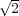

- 856143.
- 341432.
- 432544.
Solution:

Solution:
Each set contains the integer points
and all integer points that are larger than at least one of these points, and no other point. So the sets are identical.
The most effective formulation is the one with the tightest LP relaxation. The third formulation is the strongest, since it implies the other two relaxations. In particular:
since x3 ≥ 0, and
The second formulation implies the first, so the first is the weakest:
since xi ≥ 0 ∀i.
Solution:
We construct an optimal tour T ⊆ E.
Algorithm:
- Initialize: T = ∅. Let z be the length of the optimal tour on the original graph. Let := z.
- Loop: For e E:
- Return the tour T of length z.
If there is a unique optimal tour then it is clear that the algorithm will find it. If there are multiple optimal tours then the tour returned depends on the order in which the edges are examined: it will be the last tour lexicographically in the ordering.
It is necessary to leave ce at the modified value in Step 3(b)iiiB because of the potential for multiple optimal tours. For example, if every edge had the same length ce then the algorithm would return T = ∅ if every edge length was reset.
The number of iterations is bounded by |E|, and the work per iteration is bounded by the work of the subroutine plus a constant term.
Given a graph G = (V,E) and a set L ⊆ V , is there a spanning tree T of G such that the set of leaves is L?
(A leaf of a tree is a vertex of degree 1. The Hamiltonian path problem is: Given a graph G = (V,E), does there exist a path which visits all the vertices of G exactly once? You may assume that this problem is -complete.)
Solution:
The given problem is in NP: easy to check if a set of edges E′ meets the desired criteria.
We polynomially reduce an instance of Hamiltonian path on a graph H = (U,F) to the given problem. Let G = H, so V = U and E = F.
For each pair of vertices {u,v}⊆ U, set L = {u,v}.
Solve the Leaves problem on this graph.
If there exists a spanning tree T of G with leaves L then there exists a Hamiltonian path.
If the answer to the Leaves problem is “No” for every pair {u,v} then there is no Hamiltonian path.
Show that the optimal value is irrational. Can this problem be solved in polynomial time?
Solution:
The optimal solution is x11 = 2, x22 = 1, x12 = , which is irrational, and so cannot be written down in finite time. So this semidefinite program cannot be solved in polynomial time.
Semidefinite programming feasibility is not in NP. We can see this by looking at the dual of the problem in the question, namely
which has optimal solution y1 = 1∕(2), y2 = 1∕ . We can combine the primal and the dual problem into a
single semidefinite programming feasibility problem:
. We can combine the primal and the dual problem into a
single semidefinite programming feasibility problem:
![Find a feasible solution (x,y,S,M ) to the system:
x12 - 2y1 - y2 = 0
x11 = 2
x = 1
22 [ ]
S = y1 - 0.5
- 0.5 y2
[ X M ]
M T S is positive semidefinite.](hw2sol10x.png)
The only feasible solution to this problem is irrational, so there is no polynomial certificate of feasibility.